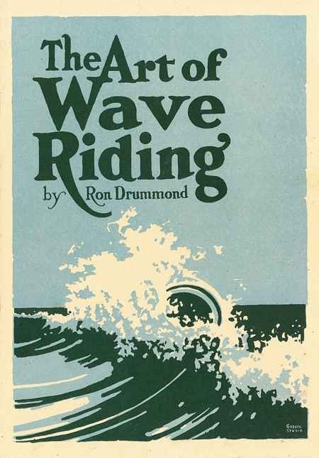
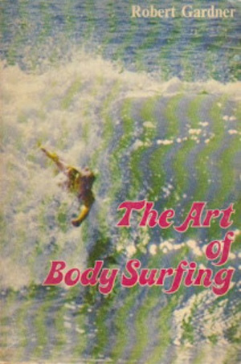
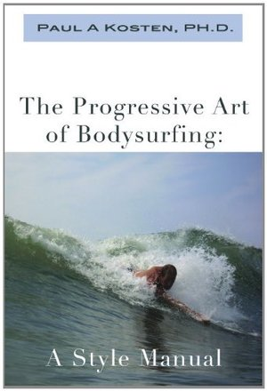
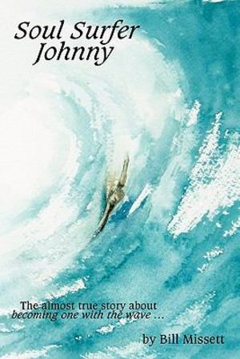
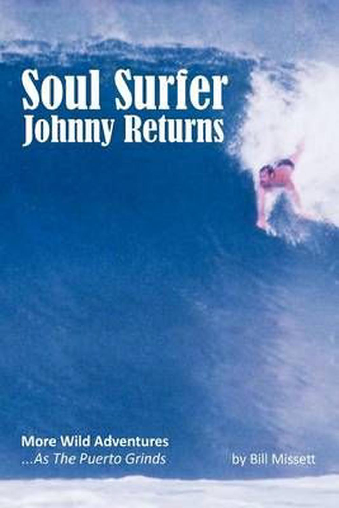
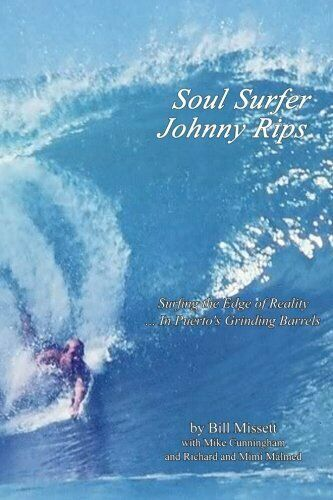
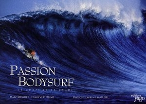
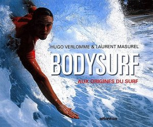

On Bodysurfing
Home
Books - Chapters - Films - Videos - Magazines - Podcasts - Clubs
Contests - Social Media - Places - People - Equipment - Quotes - Articles
BOOKS
| The Mindless Ferocity of Sharks (2002) D'Arcy, Brett Coming-of-age novel set in Western Australia. Told through the eyes of Floaty-boy, an eleven-year-old bodysurfer, the story about his family and the disappearance of his older brother contains many good descriptions of his bodysurfing sessions. |
 |
| Bodysurfing (2009) De Mestre, Neville [reference] |
 |
| How to Body Surf (1970) Dewey, Nelson [review] |
 |
| The Art of Wave Riding (1931) Drummond, Ron [full-length text] The first book on bodysurfing, written and self-published by Ron Drummond (Cloister Press, California) in 1931 with a print run of 500 copies. The 26-page volume celebrates the pleasure of swimming in waves, and contains step-by-step bodysurfing instructions. It has become a prized item among collectors of surfing literature, fetching large sums of money whenever one is sold. [Sources: Legendary Surfers, EOS, Swell Lines] A great deal of publicity has been given to Hawaiian swimmers riding waves with surfboards. Without a doubt it is a great sport, but in my estimation it cannot compare with the thrills, pleasures and exercise of bodysurfing. |
 |
| The Art of Wave Riding (2019) Drummond, Ron Reformatted, hardback version of the original 1931 book, with contributions by Kanoa Zimmerman, and foreword by Mark Renneker. Only twenty-five copies were made available, at a retail price of US$1,500. [Source: EOS] |
 |
| The Art of Body Surfing (1972) Gardner, Robert [review] |
 |
| Pablo Body Surfs (2011) Howard, Thomas N. |
| The Progressive Art of Bodysurfing: A Style Manual (2011) Kosten, Paul A. [review] |
 |
| The Yoga of Bodysurfing: An Illustrated Guide to Water Pranayama (2018) Lane, David C. [ebook] [B]odysurfing is a process which doesn't necessitate a goal (save maybe successfully exiting a finely shaped tube on occasion). It is rather a method for being attuned to the present moment and foregoing the technological madness that has overtaken our civilization, where staring at computer screens for hours on end has become the norm. (p59) |
| Secrets of a Kahuna Bodysurfer: A Spiritual Adventure Guide (1999) Lowell, Lani |
 |
| Soul Surfer Johnny (2010) Missett, Bill [review] Semi-fictional account of the good-natured Tyrony "gang", a group of bodysurfers and bodyboarders from Southern California. They travel to "Puerto Tranquilo" in Southern Mexico for a month-long surf trip, and through outrageous adventures learn about themselves and their place in the world. Contains many overt positive statements about spiritual mysticism. Bodysurfers were a strangely dedicated breed, more fanatical about their quirky individual sport than most board surfers. They were defiantly proud to be surfers, because they rode Mother Earth's energy with her---becoming one with the wave, not standing or laying on a board. (p27) |
 |
| Soul Surfer Johnny Returns (2011) Missett, Bill |
 |
| Soul Surfer Johnny Rips (2012) Missett, Bill |
 |
| Soul Surfer Johnny Rides (2013) Missett, Bill All three of the books in the trilogy (Soul Surfer Johnny, Soul Surfer Johnny Returns, and Soul Surfer Johnny Rips) in one volume, in addition to 15 new stories. |
| Passion Bodysurf: Le Corps et la Vague (2008) Muguet, Marc, and Verlomme, Hugo |
 |
| The Plight of the Torpedo People (2013) Parmenter, Dave, and Jenkins, Bruce [article] |
 |
| Bodysurf: Aux Origines du Surf (2002) Verlomme, Hugo, and Masurel, Laurent |
 |
| The Bodysurfer's Guide to Life (2010) Wollard, Mark |
 |
© 2018 - 2021 CC BY-SA Theo Pepler